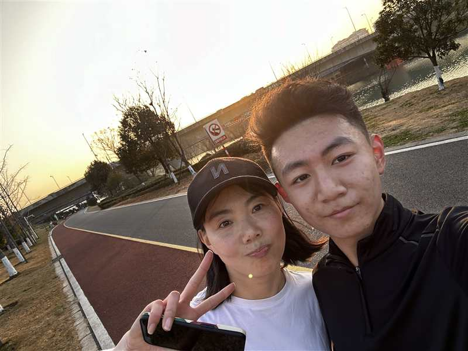
01
2024.1.13 这天天气很好，你跟我一起去秦淮河畔跑步。跑完我草率地拍了张照，你看了好像不是很满意，又找光线拍了几张，说：“脸上这皱纹，哎，哪像你小伙子”。
FOR MOM · WITH LOVE
一份小小的生日礼物
我整理了一些照片。
有的是生活中某些重要的节点，
有的是平淡的日常。
希望能让你找回昔日温馨温暖的瞬间。
可以左右滑动查看
MOMENTS TO KEEP

2024.1.13 这天天气很好，你跟我一起去秦淮河畔跑步。跑完我草率地拍了张照，你看了好像不是很满意，又找光线拍了几张，说：“脸上这皱纹，哎，哪像你小伙子”。
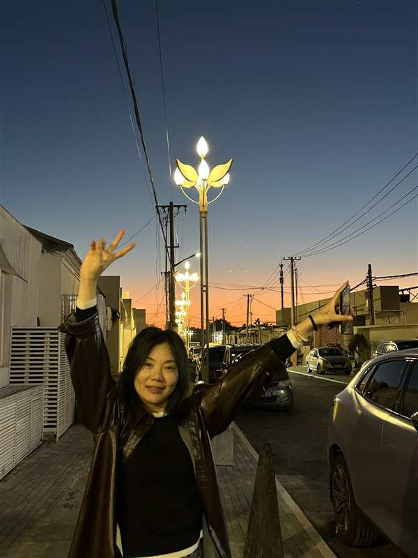
2024.1.13 这天天气很好，你跟我一起去秦淮河畔跑步。跑完我草率地拍了张照，你看了好像不是很满意，又找光线拍了几张，说：“脸上这皱纹，哎，哪像你小伙子”。
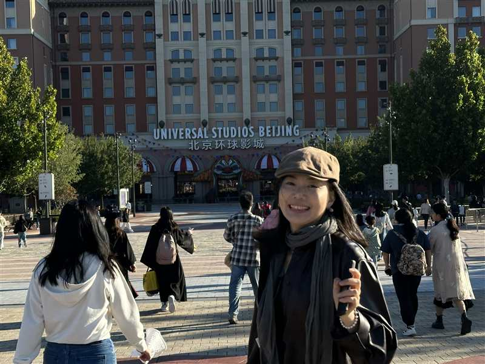
2024.10.3 在去环球的路上，我们一路狂奔。你说你喘不过气了哈哈哈。跑得快就少排队嘛，我们俩像小孩一样纯粹地跑着。
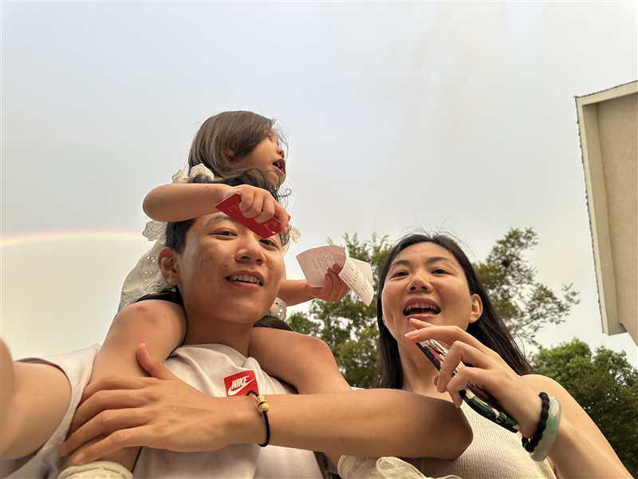
2025.7.8 在盱眙，从食堂吃完饭出来遇见了彩虹。怎么才能让我们和彩虹同框合影呢？骑尿脖。
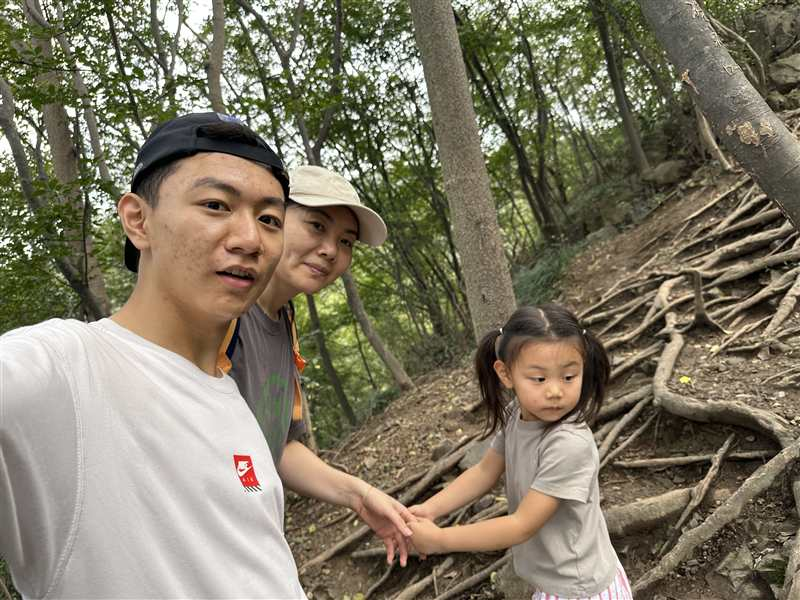
2025.10.1 和可鑫爬紫金山。是她第一次爬吗，不记得了。猛女真厉害。
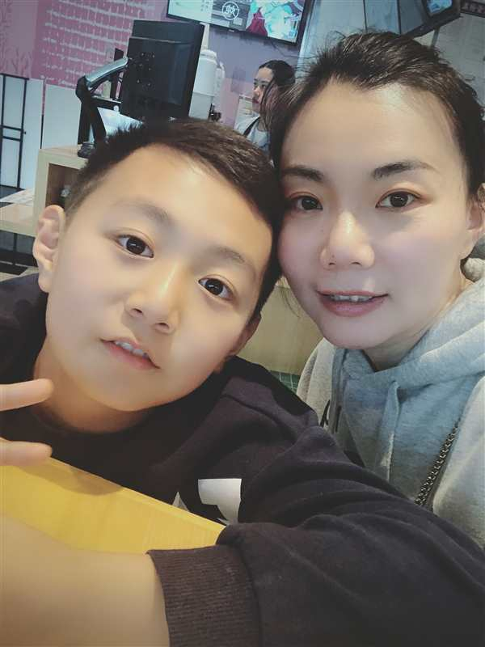
好古早的一张啊哈哈哈，美颜开的很猛，皮肤亮的已经不认识了。

2026.2.23 我跟可鑫放一块过生日喽。你用仿拍立得的相机拍的。
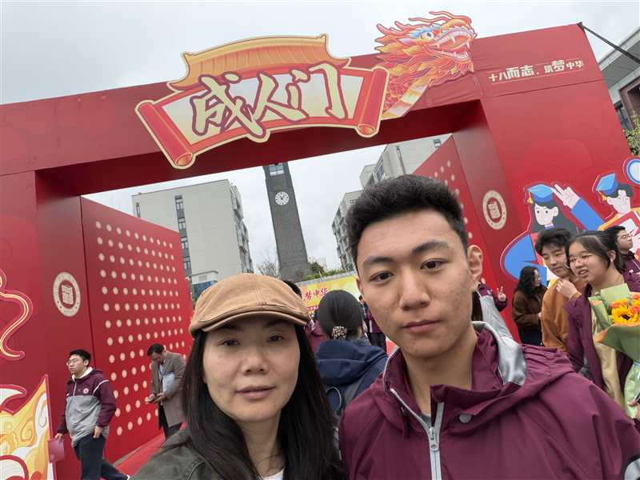
2026.4.3 学校的成人礼。在学校每天都很累很憔悴，抽了半天办这个活动不知道是给我们休息还是一种负担，感觉更累。
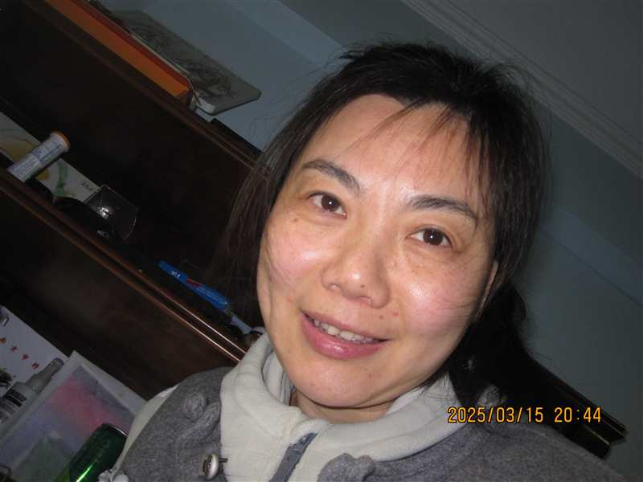
2025.3.15 随手拍的一张吧，感觉很真实很清透。你很有气血、有活力。
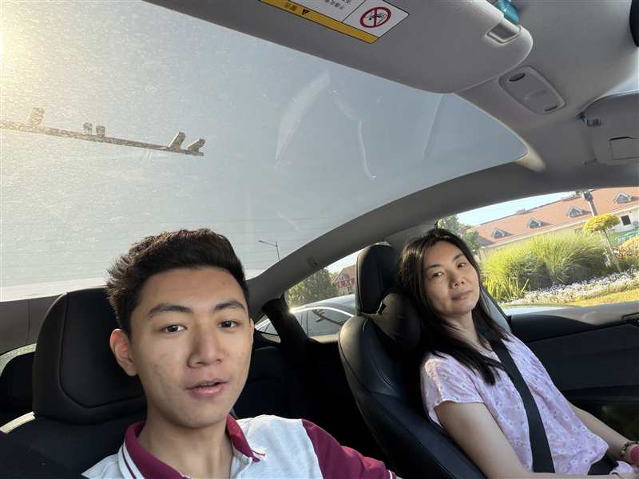
2025.3.15 随手拍的一张吧，感觉很真实很清透。你很有气血、有活力。
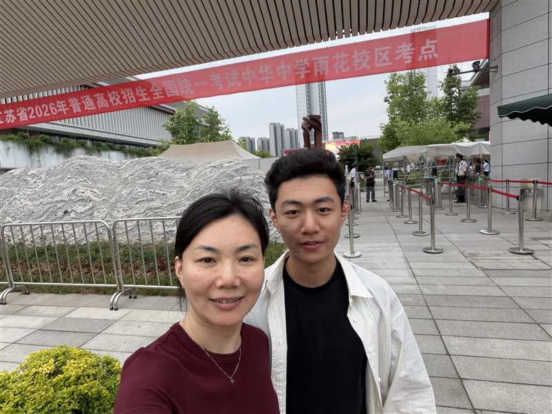
2026.6.7 第一天考完，你带着可鑫来看我。很惊喜很开心，在大巴车上就看到你俩了。其实前一天不让你们来是怕打扰我，但是进了食堂发现基本上所有爸爸妈妈都来了，哎其实很后悔。在实验室憋了一个星期真的很难受，呼吸不上来的那种感觉，没让你们来真的是自己让自己失望了。
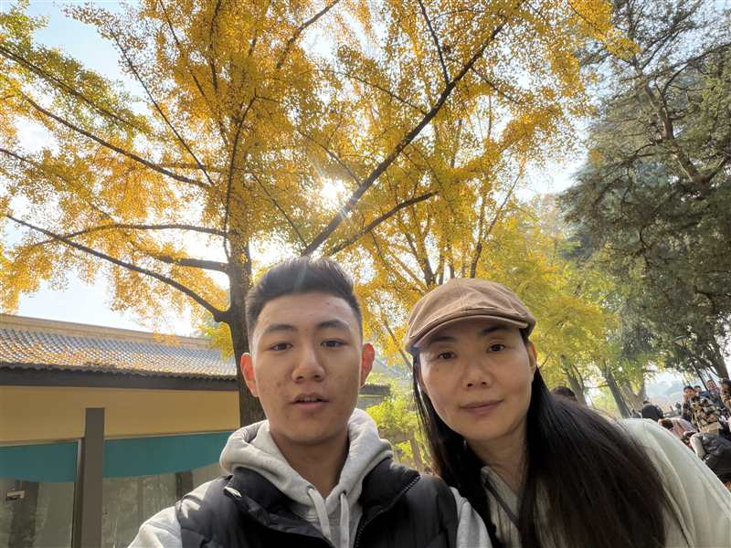
2025.11.23 这是秋天去玄武湖看银杏。理应来说是很美的，也应该很闲适自在。但是那天下午我就要返校，所以就很难受一直紧绷着，总是嫌你们走路慢。现在不会了。
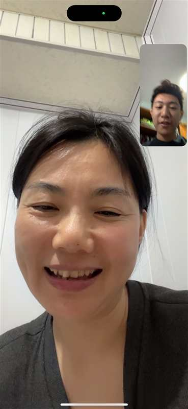
2024.11.2 这是一个周末，你好像去徐州给姥姥装修没回来。就是这天我特别难受，应该也在成人礼给你写的那封信里写过。
向左或向右滑动照片